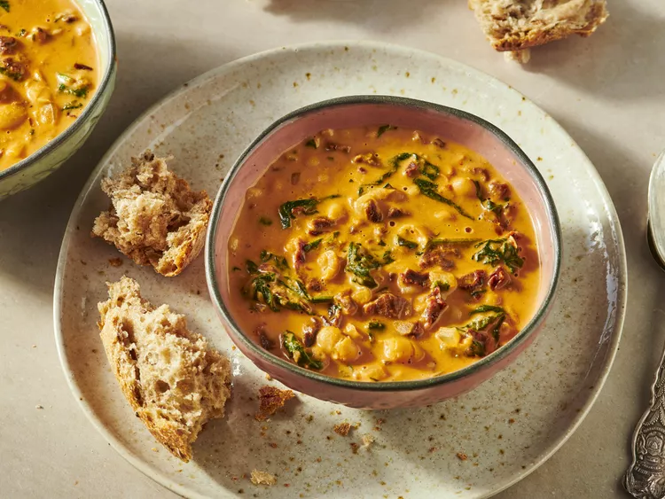

Marry Me Bean Soup

Description
This creamy marry me bean soup is packed with protein and is sure to keep you warm and full. The best part is you can have it on the table in less than 25 minutes. It’s easy to double the recipe, too.
Ingredients
- 2 tablespoons butter
- 1/2 cup diced onion
- 2 cloves garlic, pressed
- 1/2 teaspoon crushed red pepper
- 1/2 teaspoon paprika
- 1 (15 ounce) can great northern beans
- 1/2 cup chicken broth
- 1/2 cup chopped sun-dried tomatoes
- 1/4 cup tomato sauce
- 1/2 cup heavy cream
- 1/2 cup Parmesan cheese
- 2 cups fresh spinach
- 2 tablespoons chopped fresh basil
- salt and freshly ground black pepper to taste
Steps
- Gather all ingredients.
- Melt butter in a Dutch oven. Add onions and cook until soft and translucent, 5 to 6 minutes.
- Add garlic, red pepper, and paprika; cook and stir until garlic is fragrant, about 1 minute.
- Add beans, and cook until simmering, about 5 minutes. Mash half of the beans.
- Stir in chicken broth, sun-dried tomatoes, and tomato sauce. Add heavy cream and Parmesan cheese, and stir until well combined.
- Add spinach and basil and cook until spinach is wilted. Season with salt and pepper.